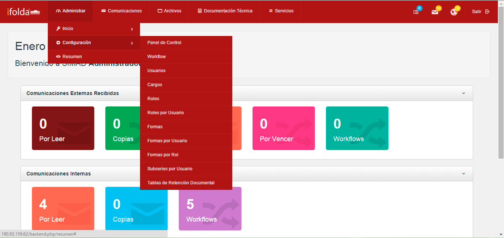
El módulo de Configuración permite administrar los diferentes usuarios, permisos y listados del sistema
Panel de ControlIr al Inicio
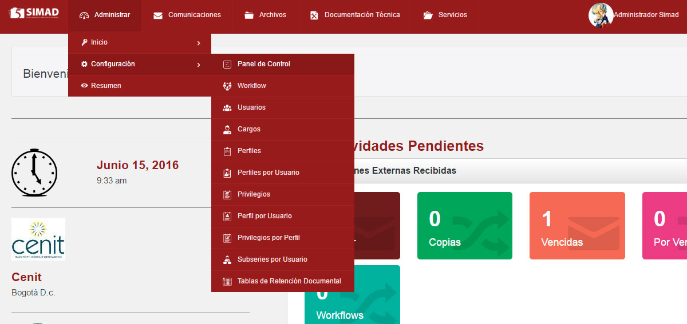
Procedimiento de consulta e ingreso a módulos de administración
a. Ingrese al módulo de administración en menú principal
b. Haga clic sobre el submenú panel de control
c. En este momento el sistema le mostrara una lista de registros que componen en panel de control
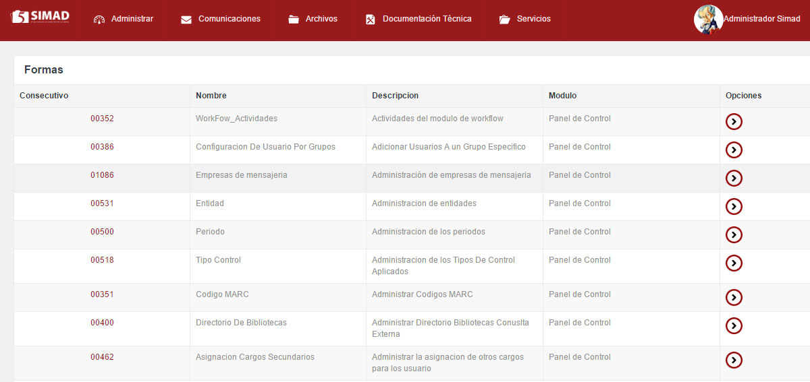
d. Como se puede observar en este listado la última columna es un acceso directo a cada uno de módulos de administración del sistema SIMAD, al hacer clic sobre alguno de estos iconos el sistema automáticamente nos llevara al respectivo módulo de administración y parametrización de nuestro sistema de gestión documental.
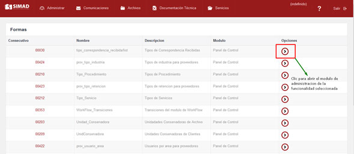
1. País - Configurar países, Este me permite configurar los países a los cuales se requiere enviar comunicaciones internas, externas o envió de mensajería para muchas de la funcionalidades en lista desplegable. Ejemplo: Colombia, Estados Unidos, Ecuador, México, Italia, etc.
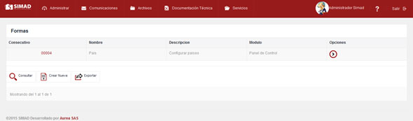
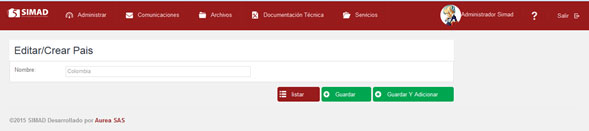
De esta mera obtendremos este resultado.
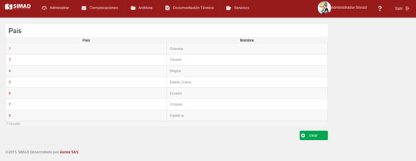
2. Ciudad - Configurar Ciudades, Las ciudades principales o municipios para que al momento de seleccionar o crear comunicaciones envíos se pueda seleccionar la ciudad de destino, tanto para los internos como el directorio externo. De igual manera debe ser visible en la lista desplegable.
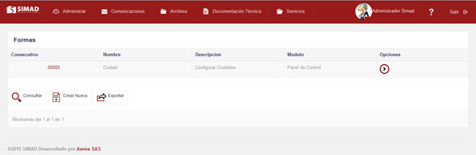
Clic en el botón crear, luego seleccionar departamento y digitar la ciudad.
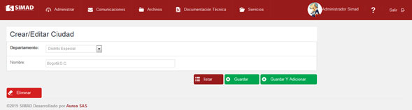
La vista previa de la ciudad creada.
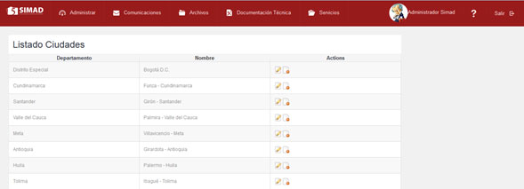
3. Regional - Configurar regionales, Las regiones son creadas las principales ciudades o puntos internos de la compañía a la cual se tiene un vínculo interno estas están dadas bajo un consecutivo o prefijo según política de la compañía. De igual manera al momento de imprimir o hacer las comunicación salga membretada la dirección de origen.
Clic en botón de opciones
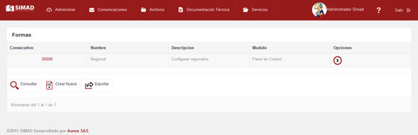
Clic en boton crear
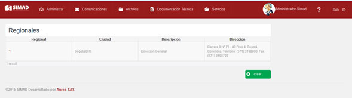
Digitar campos del formulario
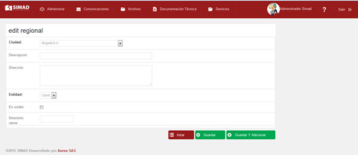
Desde panel de control se vería así,
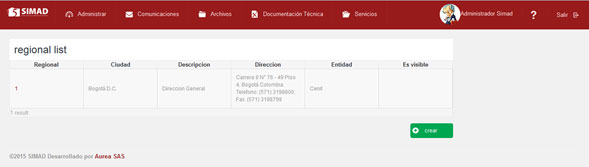
Para una comunicación enviada.
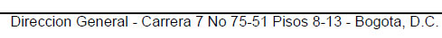
4. Dependencia - Configurar dependencias, Se crean las Dependencia o áreas de la compañía según la necesidad para temas de control de correspondencia, archivos y procesos relacionados con la compañía. Tales como Jurídica, Gestión Humana, Mercadeo. (adicional se debe de tener en cuenta ciertos campos que son importantes Nombre: Jurídica, Código: 001, Tiempo de Préstamo: los días o los meses que el documento va a estar en poder del usuario o colaborador de la compañía., Estado: este se refiere a si es un documento en estado activo o inactivo, Tipo de Tabla: de acuerdo a la ley general de archivo si para el documento aplica la TRD o TVD, Subccion: hace referencia a la oficina o dependencia que supervisa el proceso.
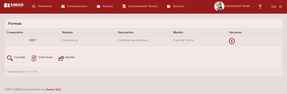
Completar el formulario con la información solicitada
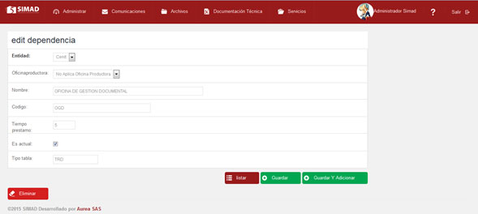
Para un usuario final o Administrados se reflejaría así,
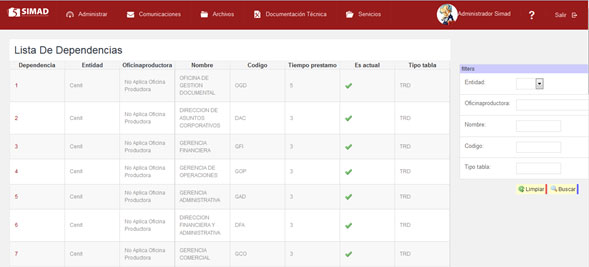
5. Parámetro - Configurar Parámetros de la Aplicación, El parámetro esta dado para configurar aquellos funcionalidades tales como las calves de acceso a la plataforma de manera que podamos tener un código: SEG_PERIODO_CAMBIO_CLAVE; la Descripción: Periodo cambio de clave; Valor del Texto: 180 y Valor Numérico: 180. los anteriores campos de deben diligenciar en su totalidad con el fin de tener un control sobre la información o restricción que se maneje y sobre el módulo correspondiente.
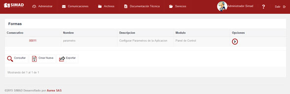
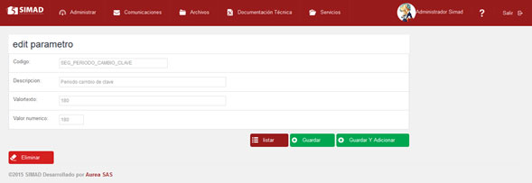
De igual forma esta funcionalidad puede usarse para distintas actividades desde administrador SIMAD.
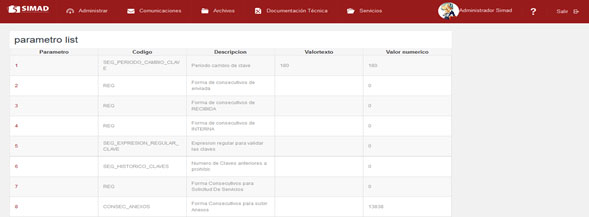
6. Tipo_correspondencia_recibida/list - Tipos de Correspondencia Recibidas, tipo de correspondencia hace referencia al módulo de comunicaciones externas recibidas en el tipo de documento que se decepciona a la hora de radícalo en lista desplegable me permite seleccionar el tipo de documento recibido; en otras palabras identificar que es: Descripción: Carta, Extracto, Cuenta de cobro, factura, en fin todo lo que radiquemos lo podamos identificar de forma fácil.
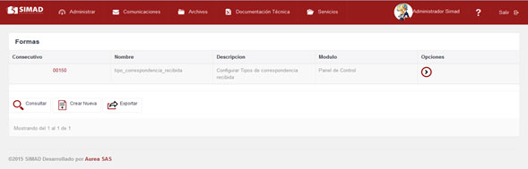
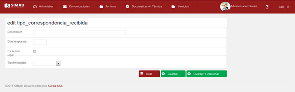
En productivo lo veremos así:
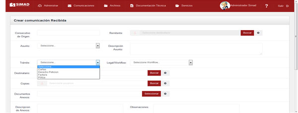
7. Autorizaciones, Este no permite selección un usuario con el fin que pueda realizar sus consultas sobre el módulo de correspondencia de manera que pueda no solo visualizar lo que tiene en su usuario sino lo que se ha radicado en un periodo especifico; para que este permiso sea exitoso debemos seleccionar las fechas en que se utiliza y quien lo utilizara; “quien autoriza la consulta y la persona autorizada.”.
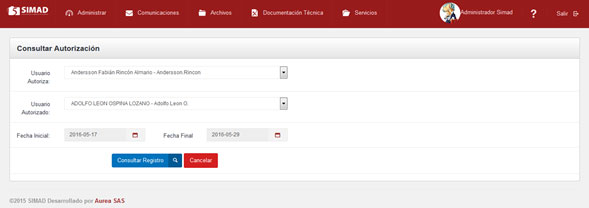
8. Forma_Recepción - Formas de Recepción, a través de este podemos configurar para los módulos de comunicaciones la forma de recepción de los documentos para los cuales habilitaremos, si es por Ventanilla, Correo Certificado, Mensajero Interno, Email entre tantas formas de recepción o cualquiera que maje la compañía. este ayuda a filtrar o hacer un reporte estadístico sobre los documentos entrantes a la compañía.
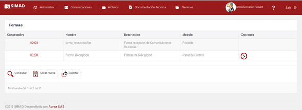
Clic en botón crear
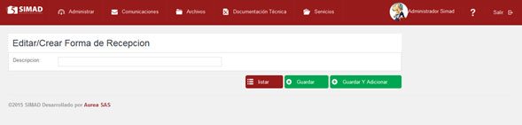
Formas de recepción creadas.
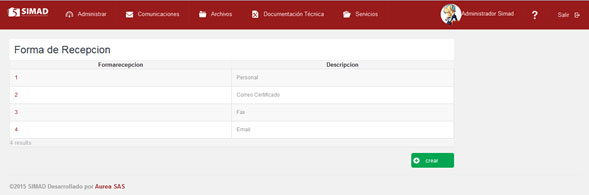
Lista desplegable para el módulo de externas recibidas.
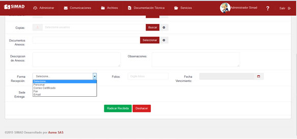
9. Tipo_Com_Interna - Tipos de Comunicación Interna, El tipo de comunicación interna aplica para configurar en el módulo de comunicaciones_ Internas que tipo de “comunicado” quiere enviar si como memorando o como un comunicado interno cualquier otra que considere pertinente de acuerdo a criterios y necesidades.
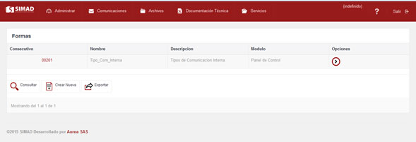
Clic en el botón crear, diligenciar el formulario y luego clic en el botón Guardar
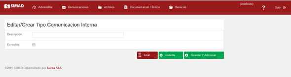
Lista tipos de comunicación recibida
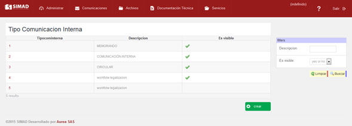
Lista desplegable desde comunicación interna.
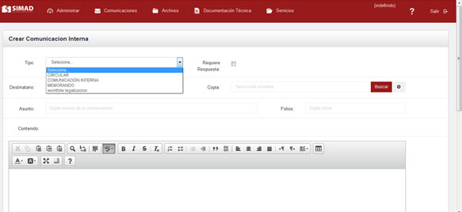
10. Asunto_Recibida - Asuntos de Recibida, Los asuntos para el módulo de correspondencia externa recibida hace referencia al tipo de documento que se está radicado o que ingresa a la compañía tales como: Acciones de tutela, Acta, Anticipo; cualquier documento que se pueda identificar de manera física y sea relevante para la compañía.
Clic en crear
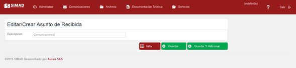
Diligenciar formulario y luego hacer clic en guardar
Lista de registros creados
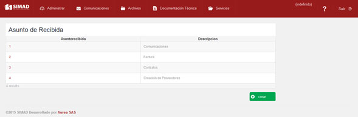
11. Unidad_Conservadora - Unidades Conservadoras de Archivo, la unidad de conservación hace referencia a la carpeta, AZ, bolsa, Fuelle donde se almacenaran los documentos para custodia y conservación de los mismos en un archivo determinado.
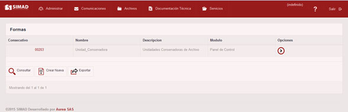
Clic en el botón crear y diligenciar el formulario, luego clic en guardar
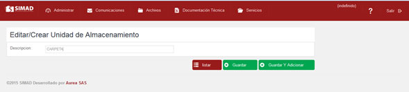
Se pueden ingresar todas las que se ajusten a la necesidad del cliente.
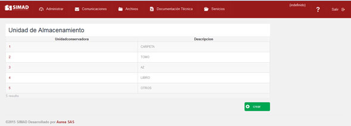
12. Soporte_Unidad_Documental - Soportes de Archivo, soporte de conservación donde se almacena la información; se puede considerar como Papel, CD.
Clic en el botón crear y diligenciar el formulario, luego clic en guardar
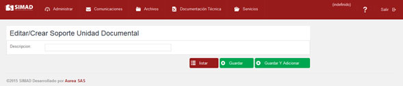
Lista de registros
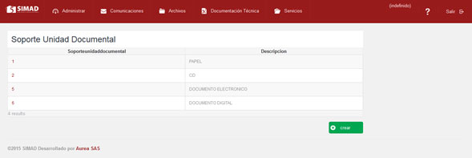
13. Estado_Unidad_Documental - Estado de Archivo, Estos estados son aplican para el módulo de archivo; cunado la unidad documental se encuentra en estado ACTIVO, INACTIVO, ANULADO; o cualquier otro estado que se considere relevante para el expediente.
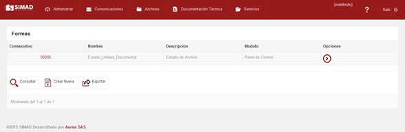
Clic en el botón crear y diligenciar el formulario, luego clic en guardar.
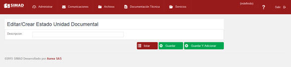
Lista de registros
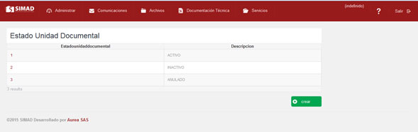
14. Frecuencia_Consulta - Frecuencia de Consulta de Archivos, Esta funcionalidad aplica para crear la frecuencia con que se va a consultar o se requiere la información si es Alta, baja, media, prioritario o cualquier otra que requiera teniendo en cuenta el nivel de consulta Vs el tipo de información para el módulo de archivo.
Clic en el botón crear y diligenciar el formulario, luego clic en guardar.
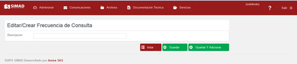
Lista de registros
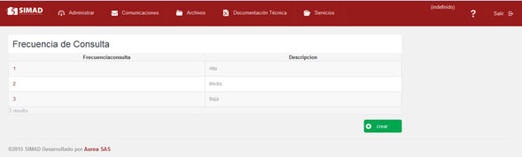
15. Soporte_Cliente - Soportes de Cliente, el soporte magnético o físico en que el cliente quiere almacenar la información para este caso se podría tomar como Papel, CD, entre otros. Aplica para el módulo de archivó clientes.
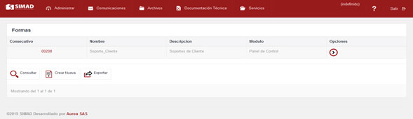
Clic en el botón crear y diligenciar el formulario, luego clic en guardar.
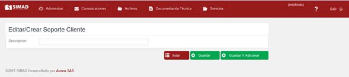
Lista de registros
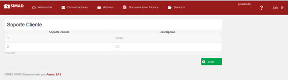
16. UnidConservadora - Unidades Conservadoras de Clientes, Unidad en que el cliente para el módulo de archivos –Clientes puede almacenar o agrupar la información física carpeta, AZ, bolsa, Fuelle; esta se podrá crear de acuerdo a la necesidad o tipo que escoja o requiera el cliente.
Clic en el botón crear y diligenciar el formulario, luego clic en guardar.
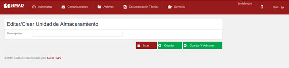
Lista de registros
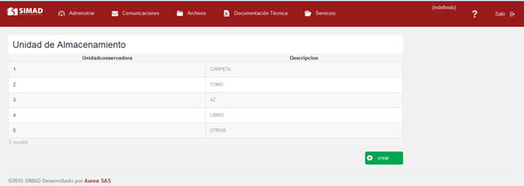
17. Tipo_Procedimiento - Tipos de Procedimiento, para el módulo de Servicios Formatos y Procedimientos permite cargar todos los instructivos o formatos que se consultan a menudo como pueden ser Formulario, - Proceso, - Procedimiento para el caso en que corresponda. Esta será la lista desplegable para configurar según Dependencia, nombre del instructivo, la descripción del mismo, el código, la extensión del texto, y la ruta para adjuntarlo.
Clic en el botón crear y diligenciar el formulario, luego clic en guardar.
Clic en el botón crear y diligenciar el formulario, luego clic en guardar.
Lista de registros
18. Prioridad_Solicitud_Servicio - Prioridades Solicitudes de Servicio, esta funcionalidad aplica para el módulo de solicitudes del servicio al créalo en la lista desplegable por la prioridad se podrá crear la requerida en este caso puede ser Baja, Media, Urgente. Entre otras.
Clic en el botón crear y diligenciar el formulario, luego clic en guardar.
Lista de registros
19. Tipo_Servicio - Tipos de Servicios, Para el Modulo de Solitudes de servicio, desde el panel de control podemos configurar con esta opción el tipo de mensajería que utiliza la entidad, por lo regular si es de tipo local. Nacional, internacional otras funcionalidades y servicios que requieran ser contemplados por la compañía.
Clic en el botón crear y diligenciar el formulario, luego clic en guardar.
Lista de registros
20. Prioridad_PQR - Prioridad de PQR, Para este módulo podemos configurar todas las preguntas referentes quejas y reclamos respecto a los procedimientos del CAD y a los inconvenientes presentados con la herramienta; de tal manera nos permite por panel de control crear y hacer la descripción de la lista desplegable según su urgencia así: -Baja - Respuesta Inmediata No necesaria -Normal - Inquietudes generales sobre el CAD -Urgente - Fallas urgentes
Clic en el botón crear y diligenciar el formulario, luego clic en guardar.
Lista de registros
21. Categoria_PQR - Categorías de PQR, Este módulo es de apoyo para el usuario ya que atreves de su funcionalidad se facilita montar las Peticiones, quejas y reclamos respecto a los procedimientos del CAD y a los inconvenientes que tengan con el SIMAD; a través del panel de control esta nos permite hacer la lista desplegable la categoría de estas como pueden ser, los servicios prestados la empresa prestados de los PGD y/o servicios que estos contemplan.
Clic en el botón crear y diligenciar el formulario, luego clic en guardar.
Lista de registros
22. Descarte_Final_Subserie - Descartes Finales, Para el descarte final Subserie obedece a los disposición final de los documentos según la TRD, ciclo vital del documento y aplica para cada una de las unidades documentales creadas y custodiadas en archivo, adicional permite crear otros disposiciones finales por según subserie.
Clic en el botón crear y diligenciar el formulario, luego clic en guardar.
Lista de registros
Las disposiciones finales se puede crear las que el cliente considere pertinente, pero estas deben estar sujetas a la ley general de archivos.
23. Auditoria – Auditoria, La auditoria permite visualizar el estado de las diferentes actividades realizados por los usuarios para todos los módulos, es decir al consultar por panel de control me arroja el total de registros credos y existentes dentro del aplicativo.
De igual manera permite exportar la información.
24. Código MARC - Administrar Coditos MARC, este código obedece al formato MARC-21 muy conocido para editar el acervo bibliográfico, se incorporan gradualmente las actualizaciones del Formato según se van publicando. Se puede aplicar para todos los módulos según la necesidad del cliente y el modulo que lo requiera.
25. Permisos_por_carpeta - Permisos por carpeta, Por panel de control, puede habilitar un permiso a un colaborador para que pueda visualizar la unidad documental para este es impórtate conocer el código de barras, el título de la unidad documental, el cobrador cuente con un permiso o autorización por parte del área o el administrador SIMAD este en capacidad de habilitar el préstamo teniendo en cuenta la confidencialidad de la información allí albergada.
Lista de registros actuales
26. Receptor de Facturas - Receptores de Facturas, por la funcionalidad Recep, permite configurar diferentes permisos para cada uno de los grupos de los distintos módulos para que puedan causar, radicar, o simplemente seleccionar un colaborador para un proceso específico.
Clic en el botón crear y diligenciar el formulario, luego clic en guardar.
Lista registros
27. prov_via_pago - Vías de Pago de Aprobación de proveedores, para el módulo de proveedores en la lista desplegable se pueden crear o modificar la forma en que el proveedor requiere su pago, esta se da por diferentes formas para los cuales podemos destacar Cheque, contado, transferencia entre tantas.
Clic en el botón crear y diligenciar el formulario, luego clic en guardar.
Lista registros
28. prov_usuario_area - Usuarios por área para proveedores, para poder ingresar, configurar permisos para que colaboradores del área puedan dar sus respectivas aprobaciones de acuerdo a los procesos y políticas para la creación y activación de un proveedor.
Clic en el botón crear y diligenciar el formulario, luego clic en guardar.
Lista registros
29. prov_tipo_retencion - Tipos de retención para proveedores, se crean y se configuran las diferentes retenciones que por ley debe tener cada uno de los proveedores en cuanto a impuestos.
Clic en el botón crear y diligenciar el formulario, luego clic en guardar.
Lista registros
30. prov_tipo_industria - Tipos de industria para proveedores, El tipo de proveedor que es y el servicio que prestara para efectos de control es importante conocer cuál tipo tales como filtros, Mantenimientos zonas verdes, lubricantes, maquinaria y equipo; lo anterior para la lista desplegable al momento de aplicarlas respectivas validaciones y lo relacionado a lo concerniente a retenciones.
Clic en el botón crear y diligenciar el formulario, luego clic en guardar.
Lista registros
31. prov_tipo_contribuyente - Tipos de contribuyente para proveedores, podemos configurar, crear el tipo de contribuyente que es el proveedor para que al momento de verificar, hacer las validaciones del mismo la lista desplegable me muestra las distintos tipos; seleccionar el que aplica según su régimen.
Clic en el botón crear y diligenciar el formulario, luego clic en guardar.
Lista registros
32. prov_moneda_pedido - Monedas para proveedores, el proveedor deberá facturar de acuerdo a la moneda de su país es por ello que esta funcionalidad me permite crear en lista desplegable para configurar según corresponda.
Clic en el botón crear y diligenciar el formulario, luego clic en guardar.
Lista registros
33. prov_lista_docs - Lista documentos para proveedores, en la creación del proveedor y la validación que hace el área encargada esta opción nos permite visualizar la lista desplegable de los documentos que se adjuntan o se requieren para la creación del mismo.
Clic en el botón crear y diligenciar el formulario, luego clic en guardar.
Lista registros
34. prov_item_flujo – ítem de flujo de proveedores, para las validación y creación del proveedor se hace necesario crear un flujo donde pueda intervenir las diferentes áreas, para valar, liberar, rechazar o en su defecto bloquear el proveedor.
Clic en el botón crear y diligenciar el formulario, luego clic en guardar.
Lista registros
35. prov_grupo_tesoreria - grupos de tesorería de proveedores, para el área de tesorería es importante conocer porque se está creado el proveedor y con qué finalidad de servicio es por ello que esta funcionalidad nos permite crear una lista desplegable que nos indique el servicio que prestara y el área responsable del proveedor.
Clic en el botón crear y diligenciar el formulario, luego clic en guardar.
Lista registros
36. prov_grupo_esquema - grupos de esquema de proveedores, para el módulo de proveedores es importe poder determinar el tipo de compra que hará la entidad, tener claridad sobre el tipo de servicio y en que modalidad se obtendrá es primordial para temas legales e impuestos sobre los servicios.
Clic en el botón crear y diligenciar el formulario, luego clic en guardar.
Lista registros
37. prov_correspondiente_autofacturacion - grupos de autofacturacion de proveedores, se asocia automáticamente a la versión del aplicativo SIMAD.
Clic en el botón crear y diligenciar el formulario, luego clic en guardar.
Lista registros
38. prov_condicion_pago - grupos de pago de proveedores, al momento de generar la creación y de común acuerdo con el proveedor es importe tener claro la forma de pago y el tiempo en se liberara la consignación por el servicio prestado por lo regular esto aplica para facturas en forma de pago de contado, 15, 30 días y otros con que este recibirá por los servicios prestados.
Clic en el botón crear y diligenciar el formulario, luego clic en guardar.
Lista registros
39. prov_check_list_pregunta - lista de preguntas de proveedores, Para el área de proveedores es importante conocer las posibles preguntas, dudas, y verificación en centrales de riesgo, es por ello que esta funcionalidad permite en lista desplegable crear y configurar preguntas que se consideren relevantes o importantes tanto para el área o la compañía. adicional permite controlar que todo lo requerido se cumpla o esté en orden.
Clic en el botón crear y diligenciar el formulario, luego clic en guardar.
Lista registros
40. prov_area_aprobadora - área aprobadora de proveedores, crear un proveedor implica contar con muchos requisitos validaciones y autorizaciones no solo del área sino de las áreas que aprueban o se ven involucradas para obtener servicio de forma efectiva y confiable para la compañía. Esta funcionalidad nos permite configurar las dependencias que intervengan en el proceso adicional configurar para que generen un alerta por cada uno de las actividades ejecutadas para conocimiento del involucrado.
Clic en el botón crear y diligenciar el formulario, luego clic en guardar.
Lista registros
41. Asignación Cargos Secundarios - Administrar la asignación de otros cargos para los usuario, este permiso funciona para los colaboradores que tiene un cargo doble, es decir pueden firmar sus comunicaciones como Gerentes, o Apoderado General según aplique; al momento de generar las comunicaciones le dará la opción de seleccionar el cargo amarrado a su firma. Adicional el periodo por el que tendrá el permiso.
Clic en el botón crear y diligenciar el formulario, luego clic en guardar.
Lista registros
42. Periodo - Administración de los periodos, según normatividad legal vigente y ley general de archivo nos dice que los radicados para los diferentes tipos de comunicaciones debe ser único y en consecutivo, razón por la cual el periodo nos permite crear un consecutivo cada año, es decir el primero de cada año debemos crear el periodo para que el sistema arranque desde cero para los radicados.
Clic en el botón crear y diligenciar el formulario, luego clic en guardar.
Lista registros
43. Tipo Control - Administración de los Tipos De Control Aplicados, esta funcionalidad permite ejecutar y crear controles sobre cada uno de los módulos según su necesidad, se alimentan las novedades por medio del modulo de novedades.
Clic en el botón crear y diligenciar el formulario, luego clic en guardar.
Lista registros
44. Entidad - Administración de entidades, permite crear las pequeñas y nuevas sociedades que adquiere la compañía mayoritaria, lo anterior con el fin de manejar fondos documentales por aparte y manejar un control sobre la información recibida y ejecutada.
Clic en el botón crear y diligenciar el formulario, luego clic en guardar.
Lista registros
45. Verificacion_Cont_Unidad_Doc - Verificación Contenidos Unidadad Documental, esta funcionalidad está diseñada para realizar validaciones a la hora de hacer o no la verificación de una unidad documental en transferida.
Clic en el botón crear y diligenciar el formulario, luego clic en guardar.
Lista registros
46. Grupos Correspondencia - Crear Grupos Para Correspondencia, configurar desde panel de control los grupos para radicación de correspondencia para que este genere un alerta a cada uno de los colaboradores que estén configurados dentro de este “Grupo”; de acuerdo al grupo creado se pueden ingresar los x colaboradores que requiera.
Clic en el botón crear y diligenciar el formulario, luego clic en guardar.
Lista registros
47. Configuración De Usuario Por Grupos - Adicionar Usuarios A un Grupo Específico, una vez creado el grupo se procede a ingresar los colaboradores para el área de destino se pueden ingresar los que el área considere que deban estar enterados de las comunicaciones externas recibidas.
Clic en el botón crear y diligenciar el formulario, luego clic en guardar.
Lista registros
48. prov_aduana_entrada - aduana de entrada de proveedores,
Clic en el botón crear y diligenciar el formulario, luego clic en guardar.
Lista registros
Para ver el Detalle de una de las listas realice los siguientes pasos:
Para configurar una de estas listas realice los siguientes pasos:
Para configurar una de estas listas realice los siguientes pasos:

- El sistema lo llevara a la lista de documentos que pertenecen a esa búsqueda.
Configuración listas general
Configuración listas general hace referencia a las listas que poseen el mismo método para su configuración.
Para configurar listas realice los siguientes pasos:
Para editar:
Para crear:
- Para verificar la creación de su nuevo item de la lista haga clic en listar.
UsuariosIr al Inicio
Son todos los usuarios que tiene acceso al sistema simad y de igual forma permite manejar todos los módulos del sistema dependiendo de los permisos que se le asigna a cada usuario.:
Para ingresar a Usuarios en el sistema SIMAD, realice alguno de los siguientes pasos:
- Si desea imprimir la lista de los usuarios que se encuentran creados en el sistema haga clic en exportar, el sistema llevara esta lista a una hoja de Excel para poder ser impresos o guardados..
Para crear un nuevo usuario realice los siguientes pasos:
- El sistema mostrara los detalles del nuevo usuario creado.
- El administrador debe ingresar su contraseña al momento de crear la cuenta.
- El usuario deberá cambiar su password al ingresar por primera vez al sistema SIMAD.
Para consultar un nuevo usuario realice alguno de los siguientes pasos:
- El sistema lew mostrará un listado con los usuarios de su consulta.
- Si desea borrar los datos registrados haga clic en limpiar para escribir nuevos datos.
Para Editar un usuario realice alguno de los siguientes pasos:
Para revisar el historial de cambios realizados a un usuario realice los siguientes pasos:
- El sistema mostrará una lista con los cambios que se hayan realizado al usuario seleccionado
CARGOSIr al Inicio
Permite crear, editar y verificar el listado de cargos de la administración.
Para ingresar a Cargos en el sistema SIMAD, realice alguno de los siguientes pasos:
Para crear un nuevo cargo realice los siguientes pasos:
- Para dejar de redireccionar la cuenta haga clic en Estado de redirección y seleccione inactiva, haga clic en guardar y el sistema dejara de redireccionar sus comunicaciones.
ROLESIr al Inicio
Permite definir un grupo de permisos determinado.
Para ingresar a Roles en el sistema SIMAD, realice alguno de los siguientes pasos:
Para crear un nuevo role realice los siguientes pasos:
- Si desea crear varios roles debe hacer clic en guardar y adicionar y el sistema guardar el role creado y lo llevara a crear un nuevo role.
- Si desea ver los roles que se encuentran creados haga clic en listar..
Para editar un role realice los siguientes pasos:
ROLES POR USUARIOIr al Inicio
Permite asignar el rol a un determinado usuario con el cual tiene todos los permisos que se le asignan.
Para ingresar a Roles por usuario en el sistema SIMAD, realice alguno de los siguientes pasos:
- El sistema mostrará el listado de los Roles por usuario creados.
- Haga clic en exportar para imprimir los listados desde una archivo Excel.
Para consultar un Role por usuario realice alguno de los siguientes pasos:
- El sistema le mostrará un listado con los criterios de consulta ingresados por usted.
Para crear un nuevo Role por usuario realice los siguientes pasos:
Para editar un Role por usuario realice los siguientes pasos:
- Si desea borrar un Role por usuario creado haga clic en el icono Borrar.
FORMASIr al Inicio
Permite Ver todas las formas creadas en los diferentes módulos del sistema SIMAD.
Para ver el listado de las Formas realice los siguientes pasos:
- Para ver el detalle de las Formas haga clic en el número de la forma en la columna consecutivo.
- Haga clic en exportar para imprimir los listados desde una archivo Excel.
Para consultar una forma realice los siguientes pasos:
- Si desea eliminar los datos registrados haga clic en el icono Limpiar.
Para crear una nueva forma realice los siguientes pasos:

- Si desea eliminar los datos registrados haga clic en el icono Restaurar.
Para editar una forma realice los siguientes pasos:
- Si desea eliminar los datos registrados haga clic en el icono Restaurar.
FORMAS POR USUARIOIr al Inicio
Permite Ver todas las formas por Usuario creadas en los diferentes módulos del sistema SIMAD.
Para ver el listado de las Formas por Usuario realice los siguientes pasos:
- Para ver el detalle de las Formas haga clic en el número de la forma en la columna consecutivo.
- Haga clic en exportar para imprimir los listados desde una archivo Excel.
Para consultar una forma por usuario realice los siguientes pasos:
- Si desea eliminar los datos registrados haga clic en el icono Limpiar.
Para crear una nueva forma por usuario realice los siguientes pasos:
- Si desea eliminar los datos registrados haga clic en el icono Restaurar.
Para editar una forma por usuario realice los siguientes pasos:
- Si desea eliminar los datos registrados haga clic en el icono Restaurar.
FORMAS POR ROLIr al Inicio
Permite Ver todas las formas por Rol creadas en los diferentes módulos del sistema SIMAD.
Para ver el listado de las Formas por rol realice los siguientes pasos:
- Para ver el detalle de las Formas haga clic en el número de la forma en la columna consecutivo.
- Haga clic en exportar para imprimir los listados desde una archivo Excel.
Para consultar una forma por rol realice los siguientes pasos:
- Si desea eliminar los datos registrados haga clic en el icono Limpiar.
Para crear una nueva forma por rol realice los siguientes pasos:
- Si desea eliminar los datos registrados haga clic en el icono Restaurar.
Para editar una forma por rol realice los siguientes pasos:
- Si desea eliminar los datos registrados haga clic en el icono Restaurar.
SUBSERIES POR USUARIOIr al Inicio
Permite ver todas las Subseries por usuario por Rol creadas en los diferentes módulos del sistema SIMAD.
Para ver el listado de las Subseries por usuario por rol realice los siguientes pasos:
- Para ver el detalle de las Formas haga clic en el número de la forma en la columna consecutivo.
- Haga clic en exportar para imprimir los listados desde una archivo Excel.
- Si desea eliminar los datos registrados haga clic en el icono Limpiar.
Para crear una nueva subserie por usuario realice los siguientes pasos:
- Si desea eliminar los datos registrados haga clic en el icono Restaurar.
Para editar una Subserie por usuario realice los siguientes pasos:
- Si desea eliminar los datos registrados haga clic en el icono Restaurar.
TABLAS DE RETENCION DOCUMENTALIr al Inicio
Permite ver todas la lista de las dependencias creadas en el sistema SIMAD.
Para ver el listado de las Dependencias realice los siguientes pasos:
- Haga clic en exportar para imprimir el reporte TRD desde una archivo Excel.
Para ver las opciones de una dependencia realice los siguientes pasos:
- Haga clic en el icono Regresar para volver al listado de Dependencias.
Para consultar una serie realice los siguientes pasos:
- Si desea eliminar los datos registrados haga clic en el icono Restaurar.
- El sistema lo llevará al listado de las series encontradas según los criterios registrados.
Para Crear una serie realice los siguientes pasos:
- El sistema lo llevara al detalle de la serie creada.
Para Editar una serie realice los siguientes pasos:
- Si desea eliminar la serie haga clic en el icono Eliminar, el sistema preguntara si está seguro de eliminar, elija una opción.